먼저 나의 포틀랜드 여행기를 작성하기에 앞서, 이전 여행기들을 통해
나에게 많은 영감을 준 이택원씨에게 감사를 표한다. 그는 항상 우리
여행의 든든한 버팀목이었으며, 책임감 있는 리더였다. 누구보다도
힘겨웠을 여행에서, 가장 힘든 티를 내지 않고 우리의 여행을 멋지게 이끈!
이택원 씨에게 감사를 전하는 바이다.
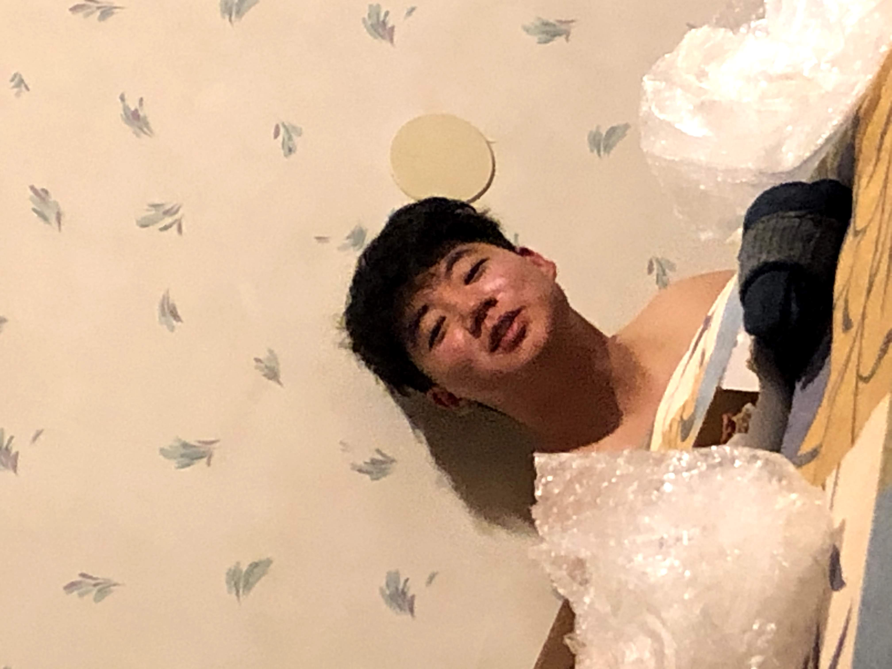
그리고 그의 여행기에서 하나 수정을 하자면 MoPOP은 대단한 곳이었다.
그곳에는 너바나 전용 전시관이 있었다. 그리고 펄잼도, 지미
헨드릭스도.
(커트 코베인)
시애틀은 너바나의 도시이다. "시애틀 그런지". 우리나라로 치면 "부산
힙합"정도의 어감을 주는 단어일 것이다. 우리로 치면 불싸조가 멜론차트를
휩쓸고 "불멸의" 문화적 아이콘이 된 것이다. 모두 락이 죽었다 생각할
때,너바나, 펄잼 등 시애틀 그런지 밴드들은 미국의 북서쪽 끝, 우중충한
시애틀에서 얼터네이티브 락을 들고 와 세계를 휩쓸었고, 지금도 음악계에
지대한 영향을 미친다. 요즘 다시 유행하는 EMO계열 음악의 시초이다.
90년대의 암울한 음악의 분위기와 절망적인 가사들. 어쩔 수 없다. 보컬
커트 코베인은 시애틀의 화이트트래시 가정에서 태어나 가정환경의
영향으로 평생 우울증을 앓았고, 그로 인해 자살했다. 드러머 데이브
그롤은 시애틀의 길바닥 노숙자 출신이다. 우중충한 시애틀의 날씨, 바닷가
근처라 그런가 어딘가 모르게 눅눅한 공기, 플로리다나 LA에 비해 북쪽에
있다 보니 겨울도 길고 춥다. 이런 곳에서 발랄한 댄스 팝을 만드는
사람이야 말로 현실 감각이 부족한 사람이다.
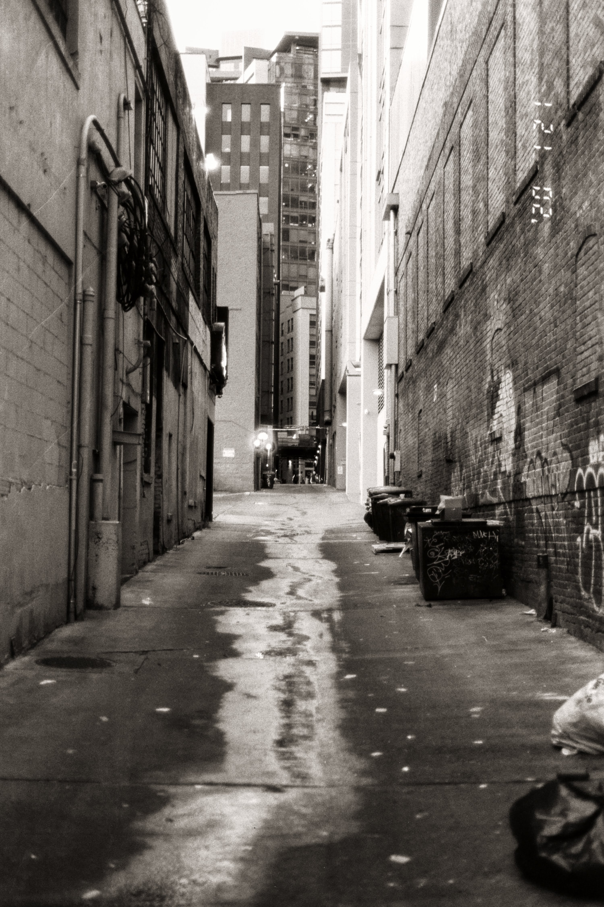
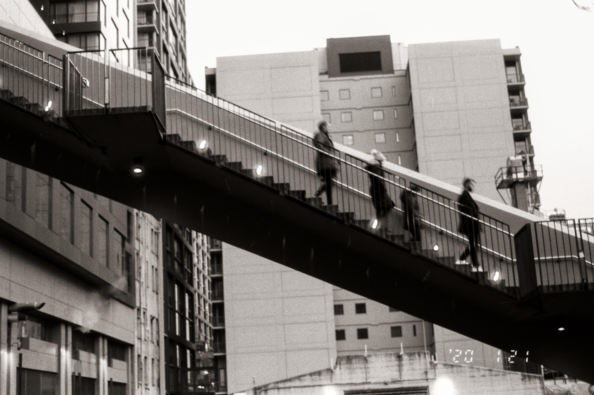
그런 시애틀에서 태어난 밴드가 바로 너바나다. 전시관을 보고 있으니 느끼는 점이 많았다. 이 나라는 문화를 존중하고 있구나. 이 나라는 돈이 많아서 이렇게 존중할 수 있는 걸까? 코로나의 장기화와 함께 음악 업계는 침체되고 있다. 거대 자본을 끼고 있어 다른 활로를 찾을 수 있는 메인스트림과는 반대로, 작은 공연들로 생계를 유지해오던 언더그라운드의 수많은 뮤지션들은 생계를 위협받고 있다. 공연장과 클럽들은 망해간다. 이미 젠트리피케이션으로 오래동안 가꿔온 삶의 터전이 흔들리고 있던 문화업계 종사자들은 조만간 다 사라질 것만 같다. 그들이 사라지고 나면 우리에게는 무엇이 남을까? 문화에서 선택지가 줄어든다는 것은 우리는 점점 가난해진다는 말과 같다.
전시를 보고난 뒤, 너바나의 음악은 180도 다르게 들렸다. 그리고 시애틀도
다르게 보였다. 마냥 감성있고 첨단의 끝을 달리는 도시는 중증 우울증
환자와 노숙자가 밴드를 만들어 그들의 삶의 썩창남을 노래하게 했고,
그것은 세계를 휩쓸었다. 그들에게 시애틀은, 미국은 어떤 곳이었을까. 이
글은 그들에 대한 존경의 의미로 Nevermind를 들으며 작성되었다.
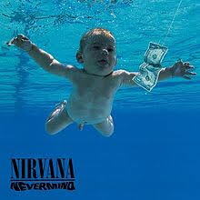
다시 포틀랜드 여행기로 돌아오기 앞서, 나 역시 이 여행에 대한 나의
입장을 밝혀야겠다. 내 생각에 이 여행은 "뜻 밖의 여정"이 아닌, "정해진
여정"이었다. 우리는 여행을 자연스럽게 결정했고, 자연스럽게 추진했다.
물론 추진은 이택원씨가 없었더라면 되지 않았겠지만...나는 이 자연스러운
과정들이 너무나도 감사했다. 4명의 서로 다른 사람들이, 큰 돈과 긴
시간을 써가며, 낮선 곳으로 향하는 일은 사실 스트레스 투성이이다. 이
험난한 과정을 부드럽게 해낸 것은 우리의 관계를 증명해내는 것이다.
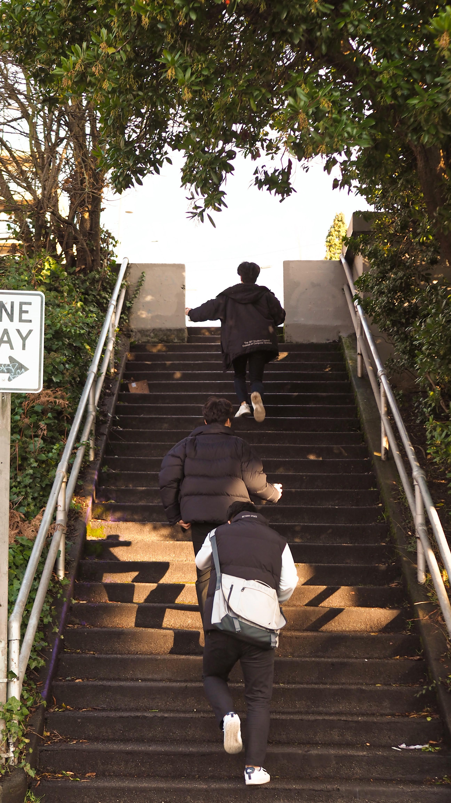
(한동안 나의 배경화면이었던 사진)
우리가 처음 뭉친 것은 중학교 때이다. 우리가 그 때로부터 얼마나 멀어졌는지는 모르겠다. 아마 각자의 거리가 다 다를 것이다. 변한 점도 있고 여전한 점도 있겠지만, 우리는 함께일 때 다 같이 그때의 모습으로 돌아간다. 우리는 서로 다른 장소와 경험을 겪으며 성장해왔지만, 서로는 우리가 공유하고 있는 그때의 모습을 기억하고 있고, 서로와 나누길 꺼리지 않는다. 그 정서적 안정이 나에게 주는 영향이 매우 크다. 성장 과정을 지켜본 아이들. 내가 믿을 수 있는 사람들. 어쩌면 내가 전혀 모르고 있는 그들의 모습도 있을 것이다. 그러한 모습도 자연스럽게 받아들일 수 있는 건 그 유대가 쌓여온 시간 덕분일 것이다.
그 유대는 자연스럽게 우리를 미국으로 이끌었다. 이제 막 성인이 된 청년들, 재수도 끝났겠다, 삼수도 끝났겠다. 이제 우리를 막을 것은 없다! 요컨대 우리는 흐름에 올라탄 것이다. 유럽으로 가자, 동서부를 다 가자, 동남아를 가자, 말이 많았지만, 결국 우리는 서부를 골랐고, 나는 후회하지 않는다. 결과적으로 똑같은 여행을 다시 하고 싶을 정도로 좋은 여행이었다.
포틀랜드는 내가 가자고 했다. 가이드북을 넘기다가 어디서 들어본 도시의 이름을 발견했다. Portland. 심지어 이미 가기로 결정한 시애틀과 SF의 가운데에 위치해 있었다. 집돌이들의 특징이 있는데, 한 번 나가면 모든 곳을 들러야 하고 그 동선은 엄청나게 효율적이어야 한다. 나의 집돌이의 본능이 "당연하게도" 포틀랜드를 들르자고 결정했다. 사실 말이 시애틀과 SF 중간이지, 시애틀에서 포틀랜드까지 버스를 타고 4시간 반이고, 이건 서울과 부산의 거리이다. 포틀랜드에서 SF까지는 비행기를 타고 갔다... 그렇게 이동 시간이 오래 걸릴지 나중에야 알았다. 나의 "한국 기준" 거리 감각은 미국의 광활함 앞에 쓸모가 없었다. 미국은 정말 정말 거대한 나라다. 거리 감각은 내가 사는 곳이 어디냐에 따라 결정된다. 경기도민인 나는 강남까지 1시간 반이면 정말 가깝다고 생각하지만, 서울 사람들은 서울에서 서울로 어디를 가던 1시간 안이면 도착한다며 경기도민들의 기준을 이해해주지 않는다. 같은 대한민국, 서울과 경기도의 차이가 이러한데, 미국과 한국의 기준은 얼마나 큰 차이가 나겠는가. 생각의 기반이 다르다는 것은 인식의 차이를 가져온다.
포틀랜드로 가기로 한 날 아침이 되었다. 우리는 전날에 총기사고 뉴스를
ASMR 삼아 시애틀에서의 마지막 밤을 피자와 콜라, 그리고 보드카로
장식했다. 보드카는 별로 마시지도 않았지만...계획성이 철저한 이택원씨가
다음 날 아침에 대형 우버가 잡히지 않을 걸 고려해 우버를 예약해 놓았다.
시차 적응이 된 듯 안 된 듯 한 몸을 이끌고 아침 일찍 일어나 조식을
먹기로 했다. 우리가 시애틀의 마지막 날을 보냈던 숙소는 "Loyal
Inn"이라는 숙소였다.
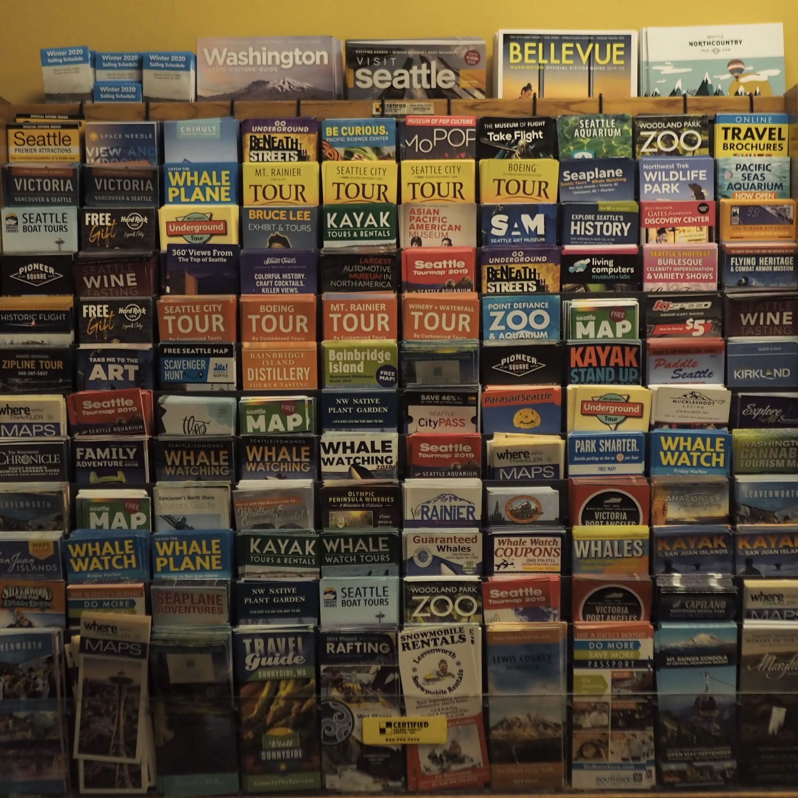
(로비에 있던 가이드 팜플렛들)
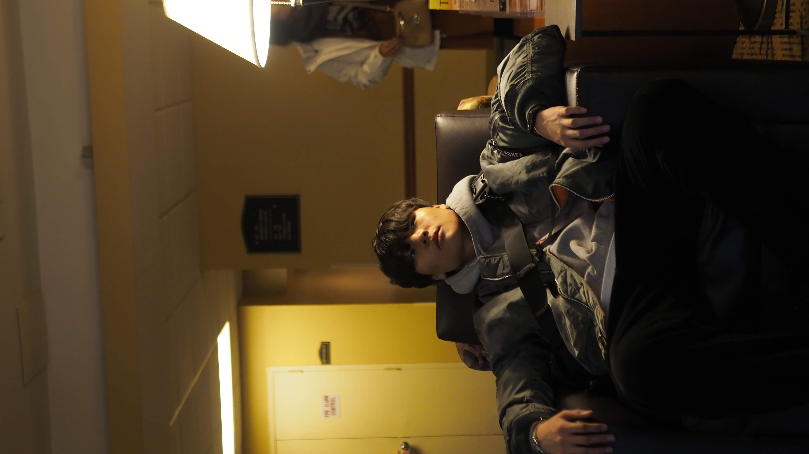
(로비에 앉아 있는 강희원)
나는 여행 내내 숙소에 항상 만족했는데... 이 Inn의 백미는 바로
조식이었다. 좀 관리가 잘 된 비지니스 호텔의 조식에 대해서는 전혀
기대가 없었다. 그냥 시리얼로 대충 때우고 갈 생각이었는데, "미국식
아침"이란 이런 것인가 할 정도로 다양하게 준비되어 있었다. 내 기억에 난
야무지게 우유를 담아갔다.
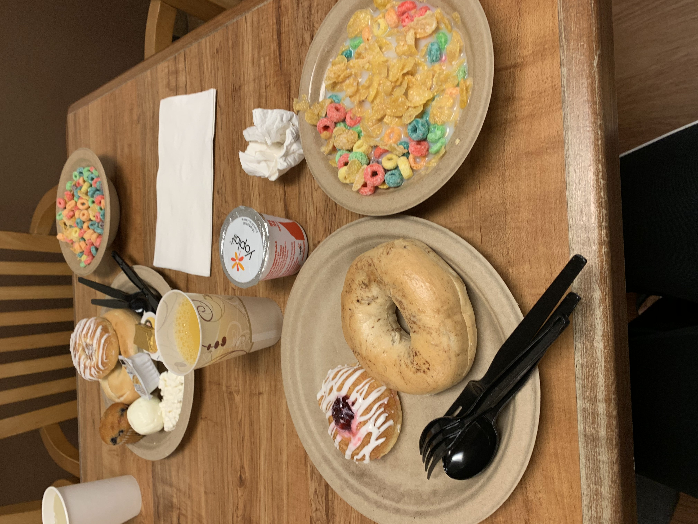
(사실 이렇게 보니까 그렇게 대단해 보이지는 않는데... 인상 깊었다.
이런 호텔도 이런 조식이 나오는구나... 조식으로는 이번 여행 최고의
조식이었다.)
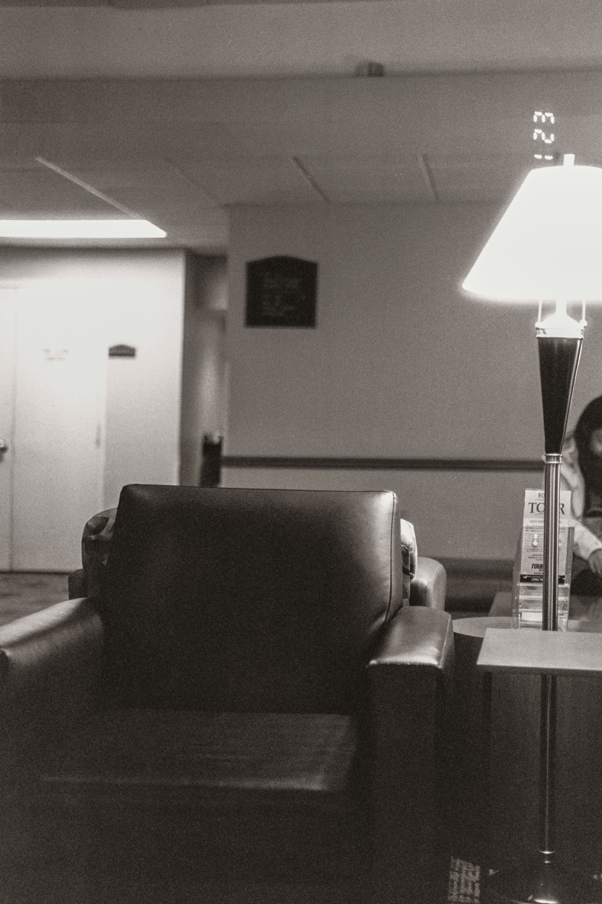
호텔 로비에 앉아 우버를 기다렸다. 밖에는 비가 내렸다. 오늘도 시애틀의
IT 기업을 다니는 사람들이 우산을 쓰지 않고 아침 일찍 출근을 하는
모습을 생각하니 시애틀을 떠나는 게 아쉬웠다. 이야기가 계속 시애틀로
새는데, 시애틀에서 가장 인상 깊었던 장면은 바로 출근길이다. 우리 호텔
바로 앞이 아마존 등 IT기업이 모여있는 중심가였다. 우리가 시차 적응에
실패해 아침 일찍 일어나 비비적 비비적 아침을 사먹으러 나간 이틀 째
되던 날, 우리는 비 오는 시애틀 거리를 걸어서 출근하는 직장인들의
행렬에 섞이게 되었다. 나에게는 신선한 충격이었다. 서울에 비해 건물의
밀도가 전체적으로 낮은 미국이라 그런지, 출근길에도 공간이 더 넓었고,
더 활기가 있어 보였다. 서울의 좁은 길을 비집고 줄을 지어 출근하는
서울의 직장인들과는 다른 분위기였다. 나에게는 관광과 여행의 장소인
이곳이 누군가에게는 치열한 삶의 현장이구나. 그리고 이 사람들은 뒤져도
우산을 안 쓰는구나...
우버가 왔고, 짐을 넣었다. 내 우산만 빼고. 나는 우산을 놓고 탔다. 다
부셔져가는 우산이었지만, 그래도 시애틀의 비를 잘 막아줬는데...
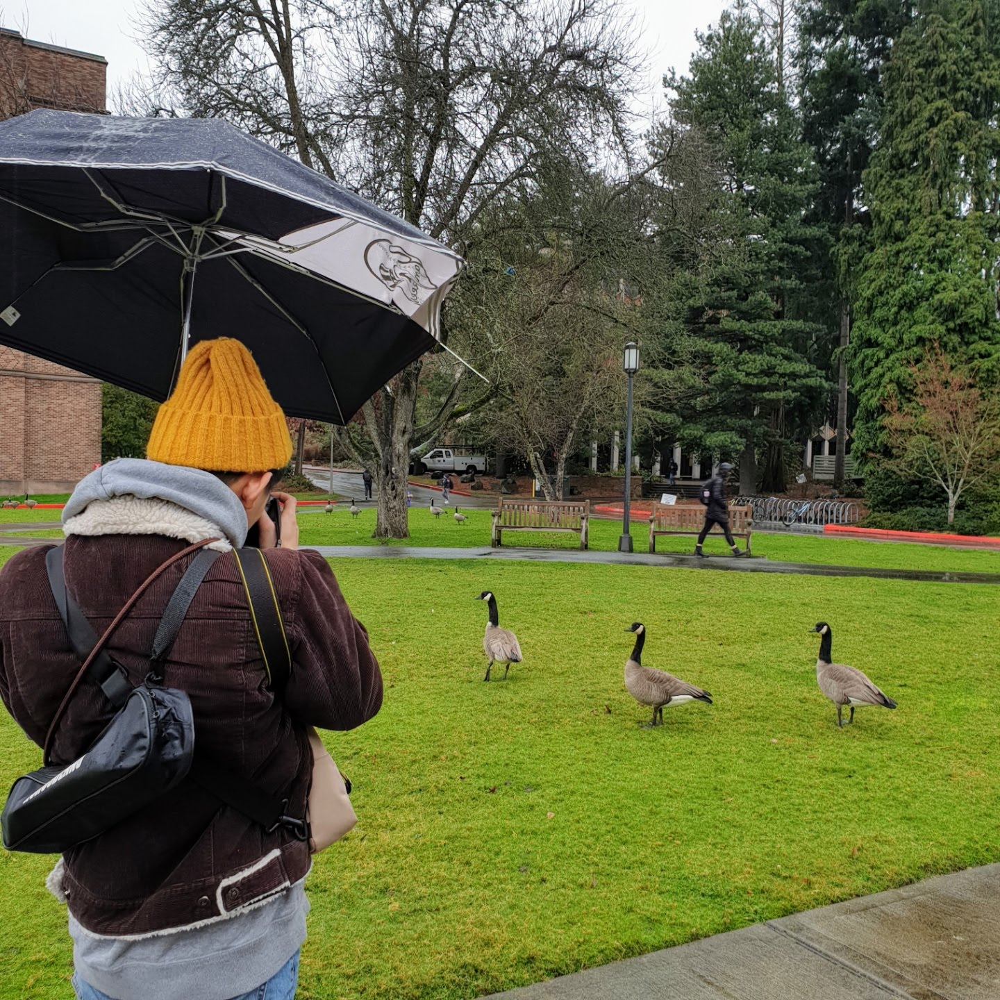
내 머리 속은 우산을 사겠다는 생각으로 가득찼다. 우버에서 내린 곳은
차이나타운이었다. 잘은 모르겠지만 포틀랜드로 가려는 다양한 사람들이
버스를 기다리고 있었다. 미국의 버스 정류장 근처는 치안이 안 좋다는
소리를 들어 긴장이 앞섰다. 아침이기도 하고, 비도 오고 위험하지는
않을까 했지만, 생각보다 위험하지는 않았다. 나는 우산이 없다는 사실에
걱정이 앞섰다.
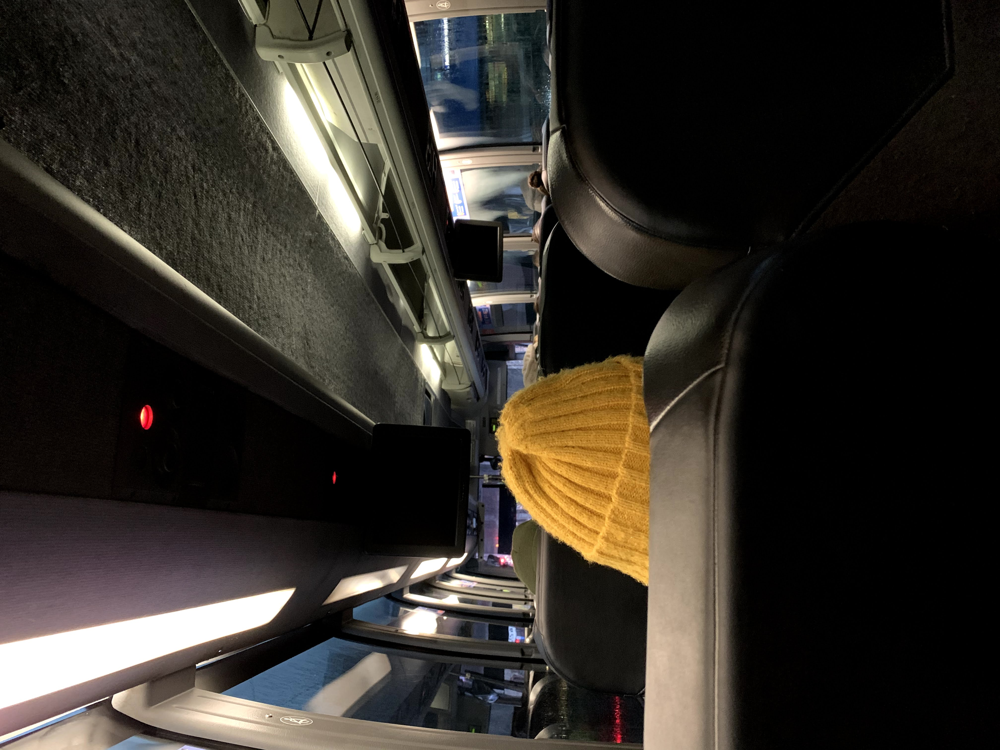
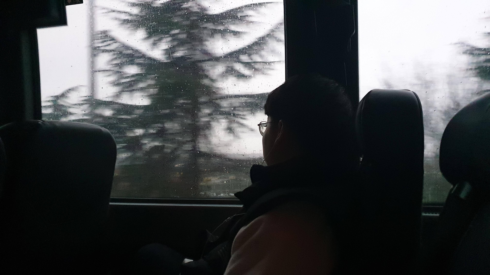
(창 밖을 바라보는 리더의 모습. 왠지 모르게 걱정이 느껴진다)
"시애틀에서 SF 가는 길"위에 있다고 선택한 포틀랜드였지만, 그 "가는 길" 버스로 4시간 반, 비행기로 1시간일 줄 누가 알았을까...내가 그걸 알았어야 하는데....버스에서 시차 적응 때문에 부족한 잠을 보충하는 사람도 있었지만, 나는 잠이 오지 않아 음악을 들었다. Colde의 Love part.1을 들으며 포틀랜드로 내려가는 길은 어딘가 모르게 차가웠다. 비가 와서 그런지. 미국의 광활함에 감탄하며 4시간 쯤 지나자 포틀랜드에 도착했다.
숙소로 가기로 결정했다. 포틀랜드의 숙소는 에어비앤비였다. 제니퍼라는
이름의 할머니의 집이었다. 우버를 타고 가면서 안 사실인데, 우리는
독채를 빌린 게 아니라 지하실을 빌린 거였다. 좀 당황스러웠다. 우버
기사님이 집을 잘 못 찾아 근처에서 대충 내려주셨고, 우리는 지도를 보고
비를 맞으며, 짐을 다 끌고, 미국의 주택가를 헤매야 했다. 지하실로
들어가는 길도 험난해 물웅덩이를 피해 한 명이 넘어가 짐을 옮겨주고 하는
등, 눈물겨웠다.
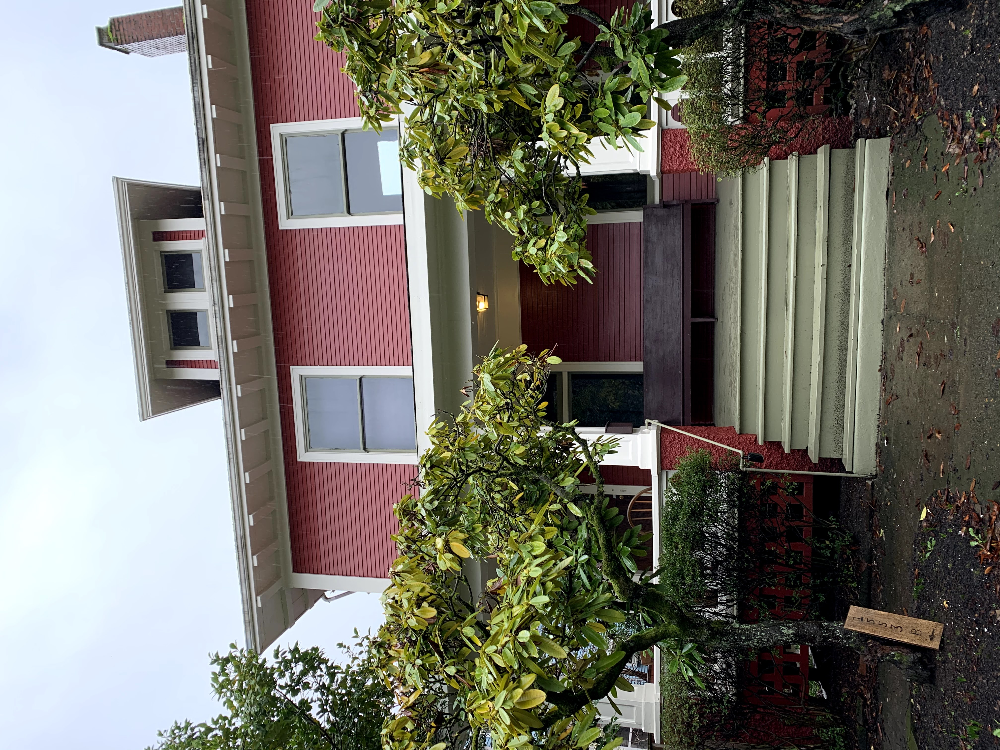
(이 사진에서는 우리의 지하실 입구조차 보이지 않는다)
지하실은 생각보다 넓고 아늑하고 눅눅했다. 미국 공포 영화에 나오는
지하실 같다는 점에 우리의 의견이 일치했다. 우리는 걱정을 하기
시작했다. 비도 오고, 피곤하고, 숙소도 생각한 것보다 별로고. 포틀랜드
이래도 될까?
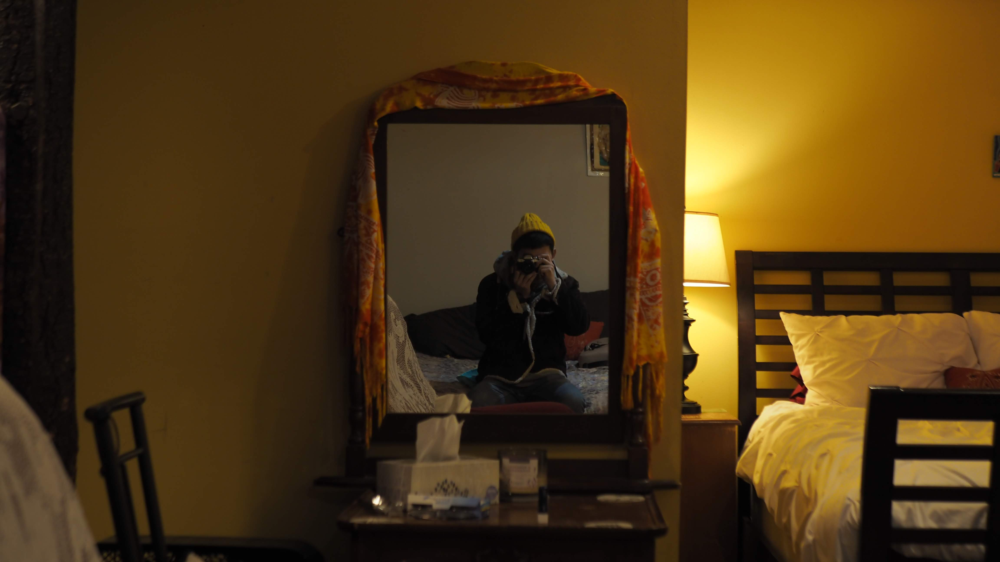
(숙소 사진은 꼭 누군가는 벗고 있어서 이것 밖에 올릴 게 없다)
어쨌든, 점심 때가 되어서 밥을 먹고 시내도 좀 돌아보기로 했다.
다운타운까지는 좀 거리가 있었고, 우버를 타고 밥을 먹으러 갔다. 식당은
고풍스러웠고, 사람이 많았다. 귀여운 희원이가 식당을 참 야무지게
골랐다.
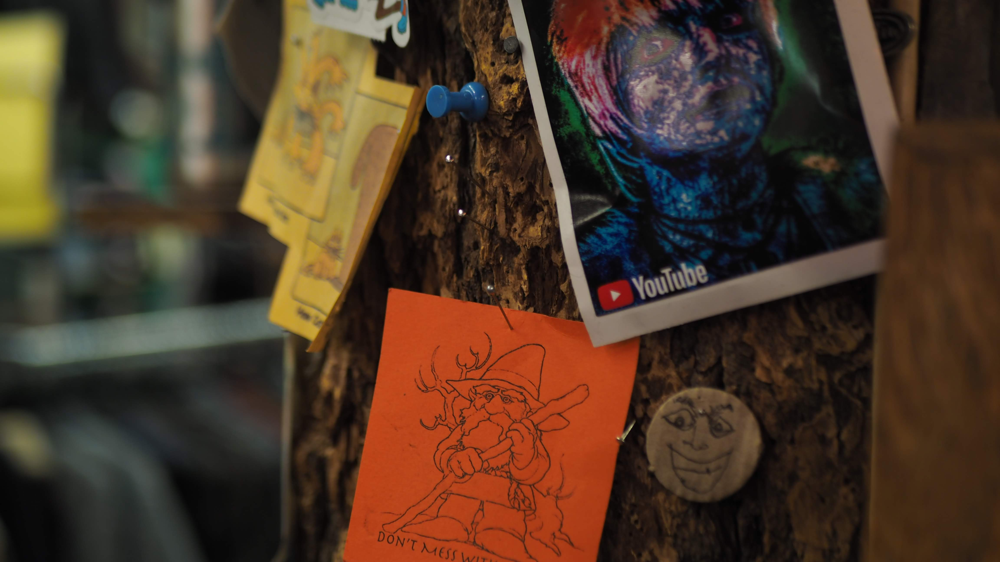
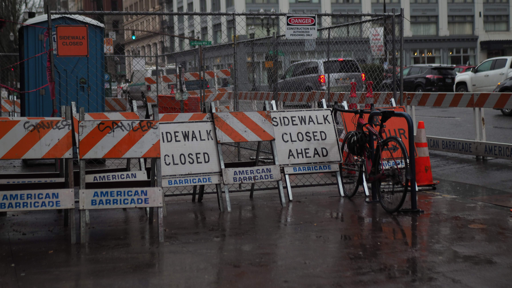
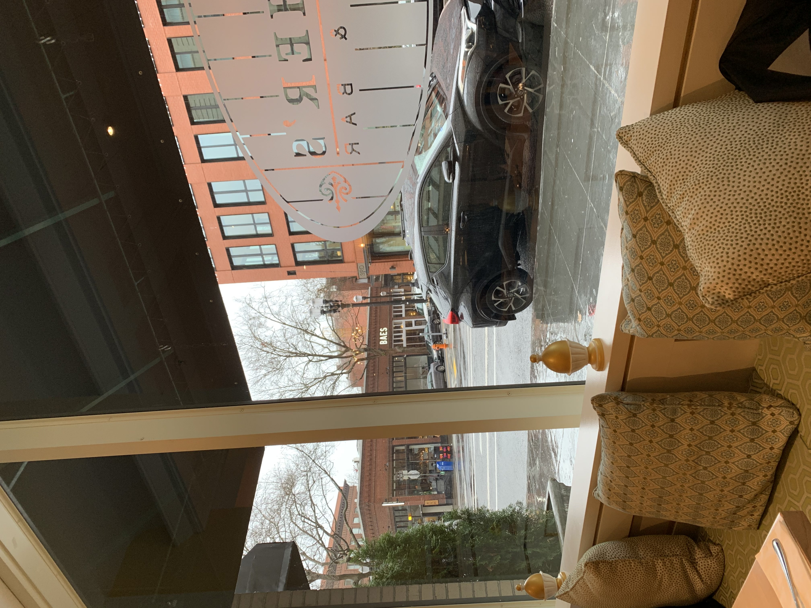
(얌전히 기다리는 중)
점원과 이런저런 얘기도 하고 우리도 점원에 대해 이런저런 이야기를 하며
기다리자 우리 자리가 났고, 우리는 뭐가 뭔지 잘 모르겠는 메뉴판을
마주쳤다. 낮선 곳으로 여행은 간 여행객들은 종종 텍스트만을 보고 음식의
맛과 비주얼을 예측해야 하는 당황스러운 상황에 놓인다. 처음 보는
식재료와 처음 보는 조리법에 대해 상상하며 우리는 최대한 익숙한 음식과
맛이 없을 수 없어 보이는 음식들을 골랐다. 하지만 우리는 익숙함의
함정에 빠졌다. Green curry를 시킨 것이다. 사실 내가 시켰다. 미안하다
친구들....나는 해봤자 시금치커리를 상상했지만, 우리와 정답게 대화를
나누던 점원 누나가 가져다 준 것은 따뜻하고 부드러운 야채 토사물에
가까운 것이었다. 나머지 메뉴가 맛있었지만, 이 그린커리는 정말 참아줄
수가 없었다. 아무리 시대가 채식의 시대라 해도 이런 음식을 돈을 받고
팔아도 되는 것일까? 나는 그린커리를 시킨 게 좀 미안해서 기분이
쳐졌었다.
여튼 그린커리만 아니면 만족스러운 식사를 마치고, 우리는 길거리를 좀
돌아다니기로 했다. 이 날의 계획은 히원이가 담당했는데, 사실 난 어떤
계획을 가지고 있었는지 아직 잘 모르겠다. 희원이에 대해 좀 써보자.
희원이는 정말 귀여운 친구다. 나는 방금 "빙구같은, 귀여운, 잘생긴,
좋은, 생각보다 속이 깊은, 여린" 등의 단어를 지웠다 썼다 했다. 하지만
역시 희원이는 귀여운 맛이다. 희원이는 방금 점심식사에서 정말 귀여운
일화를 남겼다. 희원이는 자신있게 Starter를 먹겠다고 선언했다.
전채요리로는 좀 배가 안 찰 것 같아 내가 다시 진짜 Starter를 시킬
거냐고 물어봤는데, Starter가 미국 요리에 익숙하지 않은 "초보자"들을
위한 요리인 거라고 생각했다는 대답이 돌아왔다... 이게 친구한테 웃긴
얘기 다시 해주니까 안 웃긴 이야기 뭐 그런 거 같은데 희원이는 이만큼
귀여운 친구다...
비가 계속 내렸다. 우산을 잃어버린 나는 우산을 사겠다는 생각 밖에 없었다. 하지만 미국 사람들은 우산을 잘 쓰지 않고, 따라서 우산을 팔지 않았다! 결국 이곳에도 있는 글로벌 기업 무인양품에서 비싼 돈을 주고 우산을 샀다. 그 우산은 학교에 들고왔는데, 어디 갔는지 모르겠다. 정말 아끼는 우산인데.
우리는 여러 가게에 들어갔다. 포틀랜드는 zero tax와 힙스터로 유명한 동네다. 이 두가지가 합쳐져 가볼만한 가게가 정말 많다. 그런 곳을 희원이가 여기저기 끌고 다녔고, 우리는 많이 걸었다.
동묘에서 보던 구제에서 볼만한 스타일의 옷들이 신삥으로 걸려있던 가죽과 청바지, 웨스턴 감성의 옷을 팔던 곳, 그 이층은 안장과 같은 승마용품을 팔았다. 빈지노가 입고 나와도 어색하지 않을 것 같던 힙한 아웃도어 매장도 갔다. 하지만 문제는 우리는 시차적응이 덜 되었고, 오늘 다섯시 반에 일어났고, 어제는 짐을 싸고 보드카와 피자를 먹었고, 숙소는 예상과는 다르게 불편했고, 점심에는 그린커리를 먹었다는 것이다. 난 진짜 너무 피곤했어 히원...
그래도 Powell Books는 정말 기억에 남는다. 이곳은 로컬 사람이 만든 로컬
서점이다.
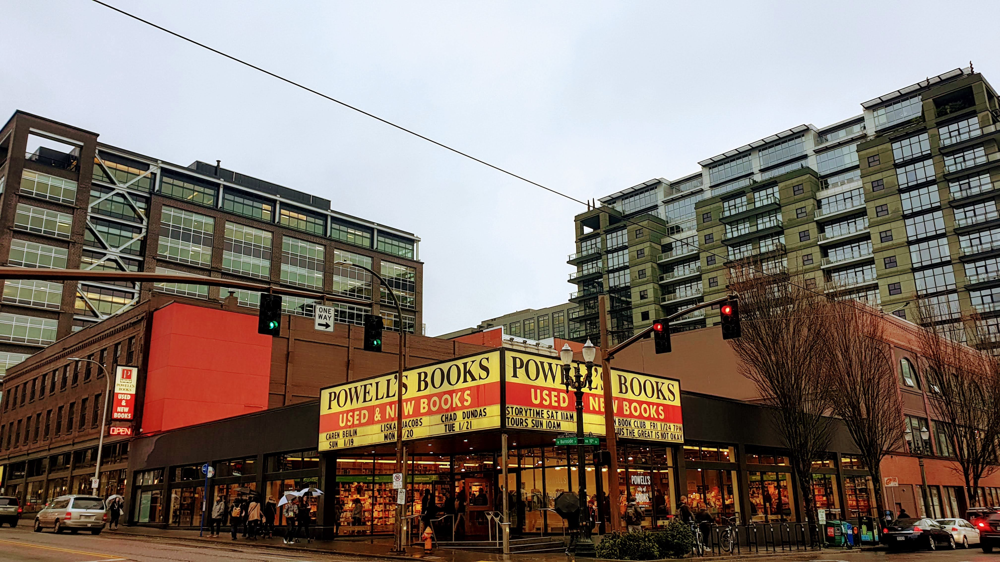
밖에서 봤을 때는 작아보이지만, 지하에 엄청난 규모의 서점이 있다.
미국에서 서점에 갈 때마다 놀라곤 했다. 책마다 직원들이 코멘트를
달아두고, 지역사회 내에서 아동, 청소년, 대학생, 노인 등 다양한 그룹의
북클럽이 진행되고, 중고 책 거래가 활발하고, 책의 분야가 정말 다양하다.
책의 주제들도 우리나라와 많이 다르다는 느낌이 들었다.
이곳에 발을 들인 순간, 두가지 생각이 들었다. 하나는 여기서 하루 종일 있을 것 같다는 직감이었고, 다른 하나는 우리나라에서는 이런 곳이 절대 나올 수 없다는 것이다. 우리나라에서 동네 서점은 아이들에게 문제집을 팔고 가끔 뻔한 베스트셀러나 떼와서 파는 곳이라는 슬픈 현실이 겹쳐보였다.
하지만 나는 5개월 쯤 뒤, 서울에서 이 생각을 가볍게 비웃는 공간을
발견한다. 그곳은 바로 성북동의 갑을문고이다.
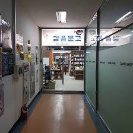
이건 뒷광고가 아니다. 갑을문고를 발견한 건 정말 우연한 일이었다. 육사에서 숙영하며 수도권 실습 중이던 나는 펜이 다 떨어져 네이버지도에 문구점을 쳤고, 갑을문고가 나왔다. 문구점인줄 알고 들어간 그곳은 문구점을 겸하는 동네서점이었다. 아파트 단지 상가 지하에 있는 서점에 대한 향수를 느껴 책을 둘러보기 시작했다. 그리고 바로 황홀감에 휩쌓였다. 이곳은 기획된 공간이었다. 책에는 포스트잇 위에 적은 코멘트가 달려 있었고, 그걸 읽고 나면 그 책을 안 사기는 좀 어려웠다. 에디터가 관심있어 하는 주제로 엮어둔 코너도 있었다. 디자인, 타이포그래피, 철학 등으로 구성된 코너들을 둘러보다 보면 자연스럽게 그 에디터가 궁금해졌다. 요즘 흔한 독립서점과는 달랐다. 안 쪽에서는 내가 흔히 생각한 동네 서점의 풍경이 펼쳐졌다. 문제집과 동화책으로 가득한 풍경. 이 공간은 현실과의 아슬아슬한 줄타기를 하는 실험장이었다. 카운터로 달려가 여러가지 질문을 던졌다. 질문을 통해 더욱 놀라운 점을 알 수 있었다. 갑을문고는 완성된 형태가 아니었다. 갑을문고는 계속해서 변화하고 있었고, 변화가 운영에서 중요한 키워드를 점하고 있었다. 현실과의 아슬아슬한 줄타기. 그러면서도 계속해서 앞으로 전진.
현실과의 공존, 그 안에서의 이상의 추구. 이는 우리가 모두 고민하는
문제이다. 그 아찔한 줄타기를 잘 하는 사람은 분명 행복한 사람이다. 나는
이 문제에 맞서기를 과감히 포기했다. 나의 이상 추구는 스무살에
끝장났다. 이는 단순히 내가 나의 기호를 포기한 것과는 다른 이야기이다.
나는 사회와 정치, 미학과 철학에 대해 생각하기를 멈췄다. 이 문제 앞에
등을 돌린 사람으로서 계속해서 이상과 현실 사이에서 고민하고 타협점을
찾아가는 사람들에게 무한한 경의과 존경을 보인다. 가까운 곳에 있다면
시간을 내 가볼만 한 곳이다. 갑을문고는 인스타그램 계정을 운용하고
있다.찾아가서 팔로우 해보자.
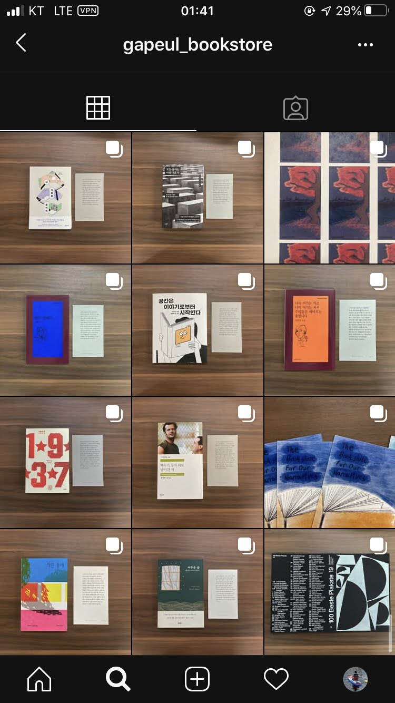
다시 성북동에서 포틀랜드로 돌아와보자. Powell Books를 나온 우리는 많이
걸었고 피곤했다. 비는 계속 왔고, 계획은 불투명했다. 우리는 지쳤다.
하지만 오늘의 가이드 강희원씨는 도넛을 꼭 먹이고 싶어했다. 피곤해서
날카로워지고 짜증이 난 나는 희원이가 점점 계획에 대해 집착을 한다고
생각했다. 사실 당연한 건데... 그래서 우리는 꽤 긴 거리를 걸어 도넛 집
두개를 갔다. 한 집은 세개 남은 도넛을 우리가 다 먹었고, 한 집은 문을
닫았다. 우리는 희원이를 향해 비난을 쏟아내기 시작했다.
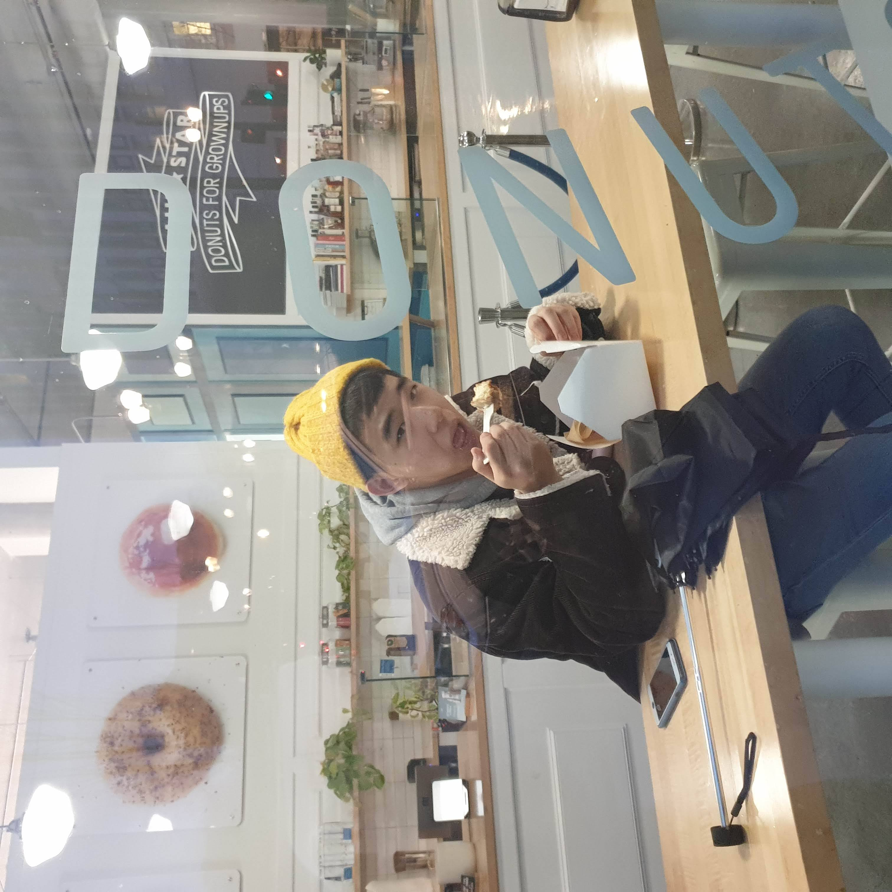
(배가 많이 고팠다)
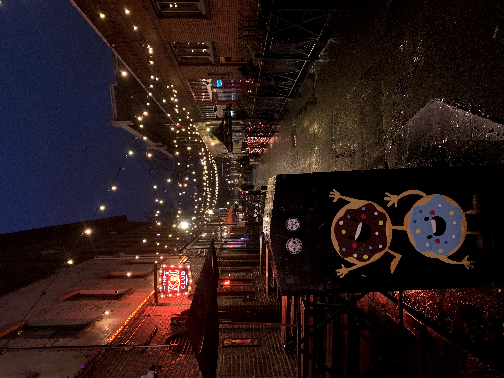
(문을 닫은 걸 보자마자 모두가 희원이를 향해 욕설과 비난을
날렸다.)
비는 계속 내렸고, 우리는 우버를 타고 숙소로 돌아가 한국에서 사온 라면을 먹기로 했다. 너무나도 피곤했고, 여행은 걱정스러웠다. 숙소는 예상과 많이 달랐고, 비는 계속 내리고 생각보다 미국은 추웠다. 오늘은 정말 불만족스러운 하루였다는 생각을 작게 하며 우버에 몸을 얹었다.
하지만 차 안에서 보는 퇴근길의 포틀랜드는 너무 아름다웠다. 주황색의
조명들과 비에 젖은 도로 위에 비추는 가로등과 방향지시등들이 거리의
고풍스러운 건물들을 비췄다. 차들은 무심히 그 도로 위를 지나갔다.
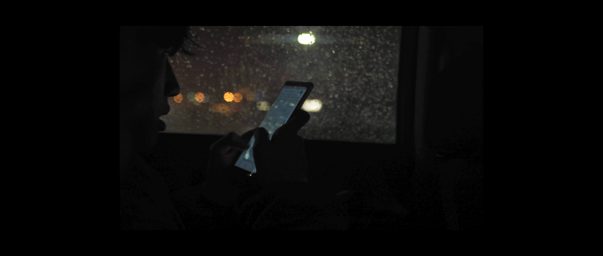
그러고 보니 아까 찍어둔 사진이 생각나 카메라를 켰다.
나는 고흐가 된 기분이었다.
왜 그렇게 오늘 여행이 힘들고 불만스러웠을까. 나는 가장 믿는 친구들과 함께 있었고, 비오는 거리는 아름다웠다. 나는 역작을 건졌고, 아끼는 우산도 생겼다. 아름다움으로 가득 찬 순간들을 피로와 짜증으로 채웠던 것이다. 우리는 종종 주변의 아름다움과 소중함을 놓치고 나중에서야 후회하곤한다. 지금 생각해보면 포틀랜드가 나에게 그렇다. 가끔은 쉬어가는 여유도, 주위의 아름다움을 찾는 재미도 있어야 한다.
우리는 지하실로 돌아와 라면을 먹었고, 실없는 소리를 하다 잠들었다. 희원이는 또 내 이불을 뺏어갔다.